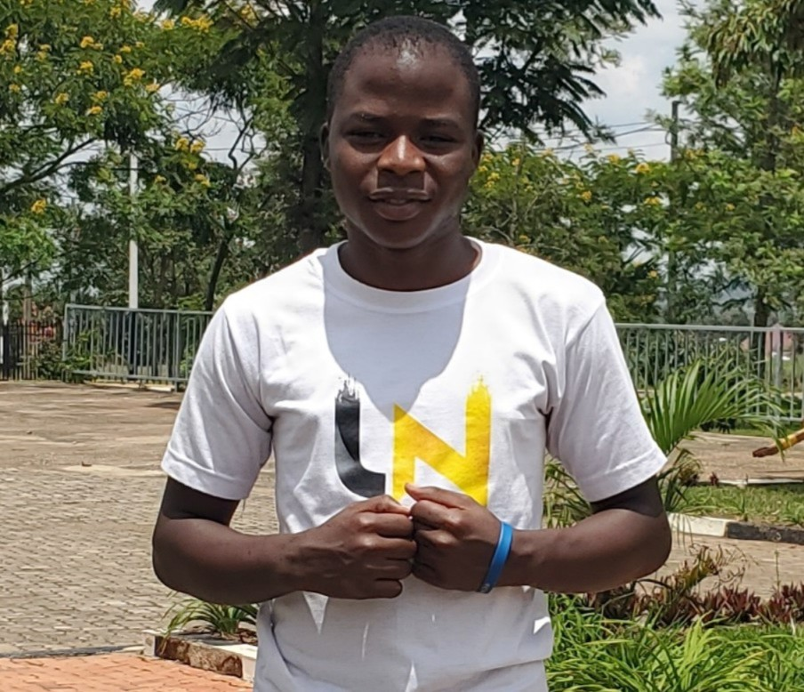
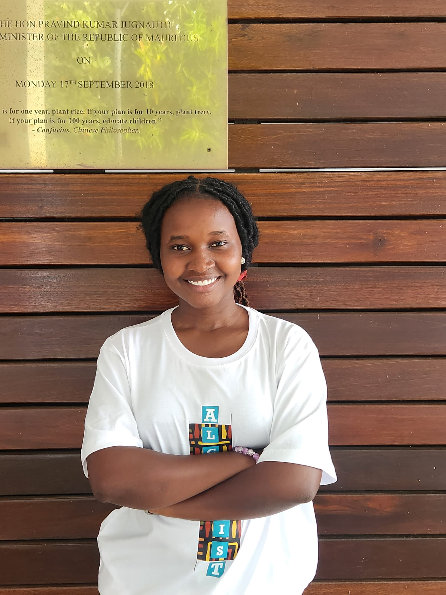
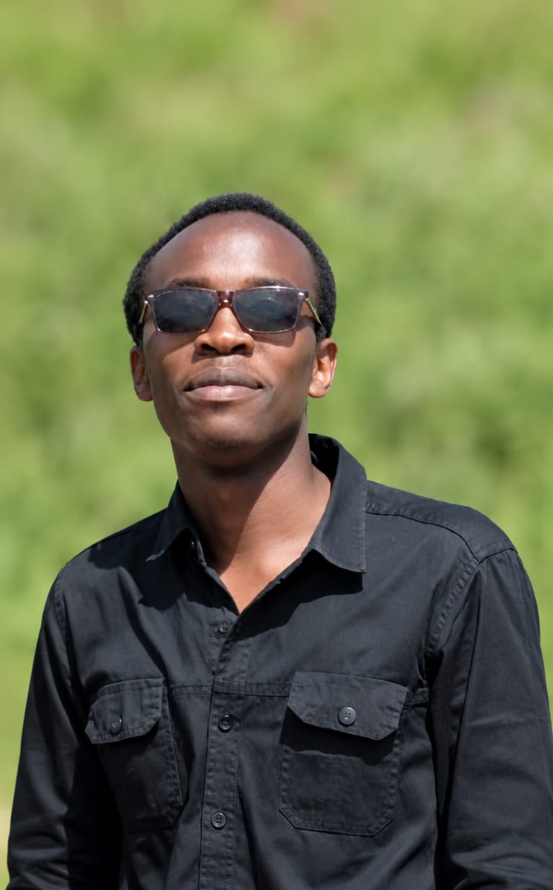
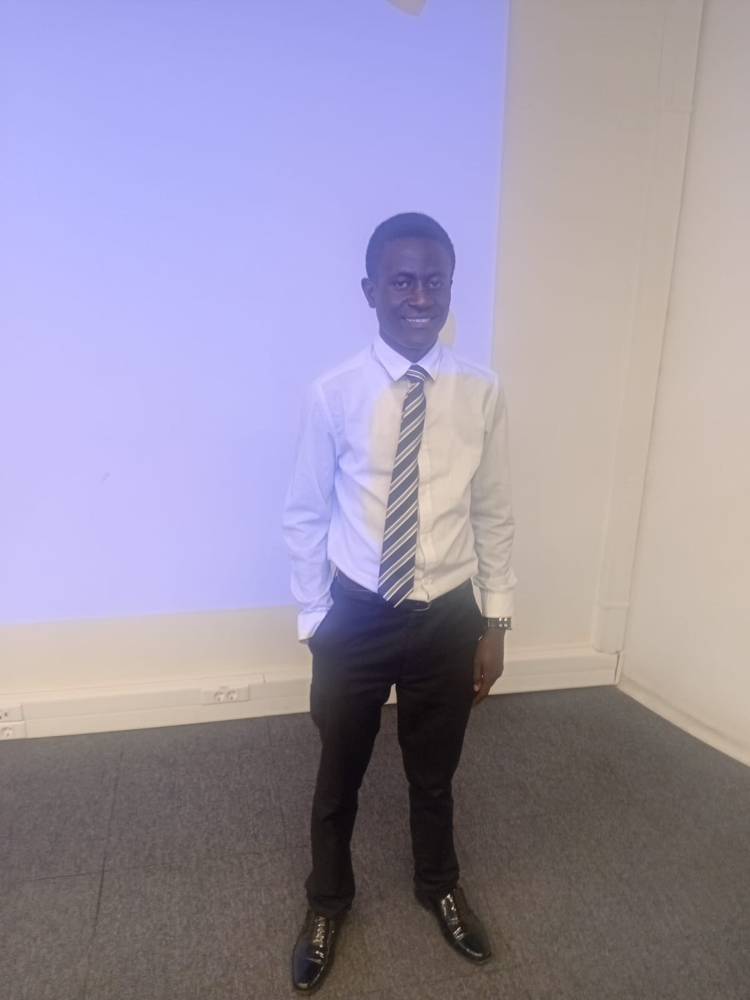

Every great movement begins with a story. Here are the voices, reflections and wisdom of the people who dared to dream of a united, empowered Africa.
"Africa does not need charity. Africa needs young people who believe in her, who rise together, and who refuse to wait for permission to build the future."
The hearts, minds and souls behind Young Africans Network share their journey, motivation and vision for Africa's future.




Principles and wisdom that shape how we think, lead and serve at Young Africans Network.
This vision drives every program we run, every session we host, every opportunity we share and every member we welcome. It is not just a statement — it is a commitment. A promise. A covenant between us and every young African who trusts us with their journey.
Every great story needs more characters. Join Young Africans Network and add your chapter to this pan-African movement. Your journey starts today!
Join YAN Today 🚀